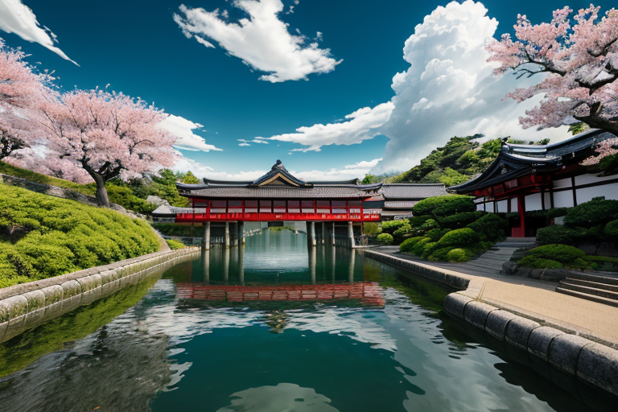
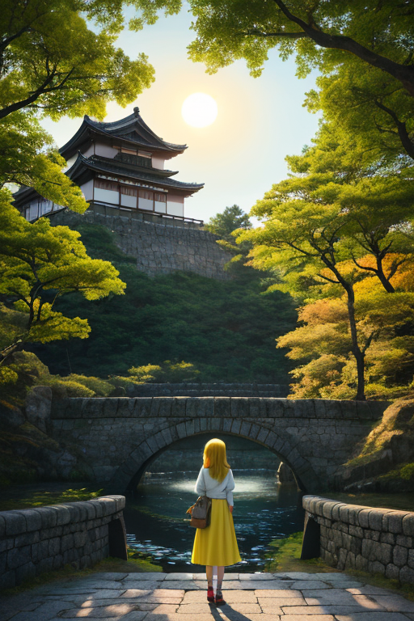
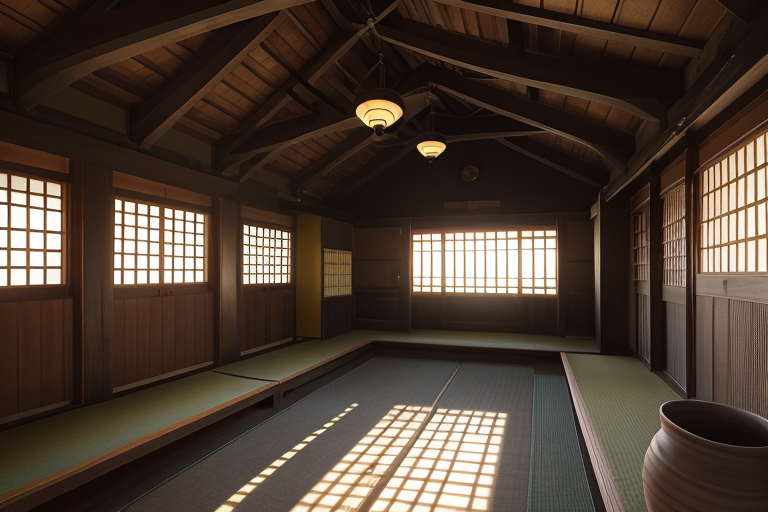
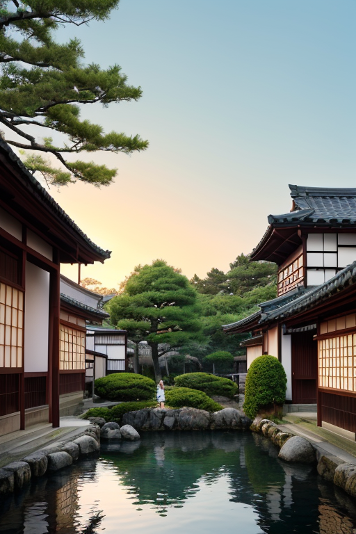
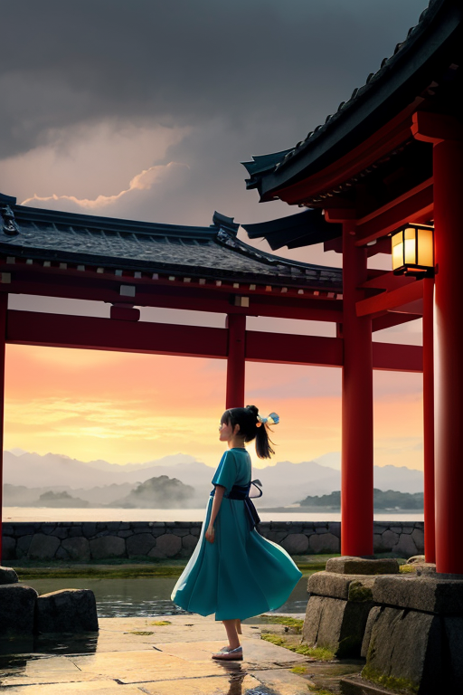

第一章 現実の岡山
あなたはまだ気づいていない。この土地にも、王がいることを。
倉敷美観地区の白壁と柳は、水の流れのように整然と並んでいる。岡山後楽園の広大な庭園は、計算され尽くした借景の美を湛え、一粒の石も乱れていない。瀬戸大橋は鋼鉄の直線で海を縫い、備中松山城は雲海に浮かぶ均整の象徴だ。ここは「晴れの国」と呼ばれる。統計上、雨の日が最も少ない。すべてが安定し、調和している。桃は規則正しく実り、マスカットの房は整然と垂れ、備前焼の窯変は、あくまで許容範囲内の偶然に留まる。
この完璧な均整は、自然の成り行きではない。歪みの列島・日本において、これほど「整った」土地は他にない。それは、強大な力による「調整」の結果である。吉備津神社の鳴釜神事で沸き立つ湯の音さえ、一定のリズムを保っている。訪れる人々は、この安定した美しさに安らぎを覚える。整うことは、確かに心地よい。しかし、その整いの底で、何かが深く、深く封じられている。均整が圧力となる時、その静謐は、不穏なまでの緊張を孕み始める。

第二章 歪みの兆候
倉敷美観地区の白壁と柳は、いつもと変わらぬ静かな佇まいを見せていた。しかし、晴王オカヤマリア・クリアだけは知っていた。備前焼の器に注がれた水の、ごく僅かな揺れ。瀬戸大橋を渡る風の、予定調和から半歩外れた気配。均整の王国に、ほころびが生じ始めていた。
「結界、安定率98.7%。想定範囲内です」
主席妖精クリアナの報告は淡々としていた。だが、その数字は先週より0.3%低下していた。吉備津神社の釜の音は、ほんの一瞬、リズムを乱した。訪れる人々は気付かず、晴天の下できびだんごを頬張る。
整うことは幸福か。王は自問した。歪みを封じ、安定をもたらすこの役目は、確かに多くの平穏を生んできた。しかし、封じられた力は消えたわけではない。均整の圧力鍋の中で、静かに沸騰を続けている。備中松山城の石垣に、昨日までなかった微細な裂け目が、朝日を浴びてほのかに光った。

第三章 王の葛藤
備中松山城の天守から、瀬戸内の海は鏡のように穏やかに見えた。オカヤマリア・クリアは、その静謐の向こうに、蓄積する歪みの重さを感じていた。均整を保つ圧力は、彼女自身の内側にもかかっていた。整うこと。それは確かに、桃畑が規則正しく並ぶ美しさであり、マスカットが完熟する確かな時間だ。訪れる人々の笑顔は、その安定がもたらす幸福の証であった。
しかし、備前焼の窯のように、封じ込められた力は熱を帯び続ける。歪みは消えない。彼女が微調整で押しとどめ、一秒遅らせ、一段階緩和しているその力は、この「晴れの国」の地盤そのものの鼓動だ。完全に封じ込めることは、鼓動を止めることに等しい。彼女の手のひらには、無数の目に見えない糸が張られ、王国の均衡を保っていた。一本が切れれば、連鎖が起きる。
「整うことは幸福か」
彼女は呟いた。温和な表情の奥で、初めての激しい逡巡が渦巻いていた。解放の一瞬の混乱か、封印の永続的な重圧か。その選択は、もはや調整者の域を超えていた。

第四章 妖精との対話
倉敷美観地区の白壁に、夕陽が長い影を落とす。クリアナは、備前焼の壺に溜めた雨水の表面をじっと見つめていた。水面には、歪まず、濁らず、完璧な青空が映っている。
「この『晴封印』は、王が自ら選んだものです」
彼女の声は、水のようになめらかで冷たい。
「遥か昔、この地は『歪み』そのものでした。吉備の国造りの時、激しい地殻の軋みが、山を裂き、川を塞いだ。桃太郎の鬼退治の物語の裏には、その地鳴りがあったとも言います。王は、その全てのエネルギーを、一点に集め、封じ込めました。それが、今の安定です。備前焼が窯変を抑えて均一な焼き上がりを目指すように、この国は『乱れ』を許さない均衡の中にあるのです」
オカヤマリアは、手に持ったきびだんごの柔らかな感触を確かめる。
「つまり、この幸福は……」
「偽物ではありません。しかし、代償です」
クリアナが壺の水を少し揺らす。映っていた空が、一瞬、波打つ。
「封じたものは、いつか還ります。その時、整っていた全てが、一気にその『歪み』を受け止めることになるでしょう。整うことの幸福は、破られるための準備でもあるのです」

第五章 微調整と余韻
備中松山城の天守から、瀬戸内の島々が朝靄の中に浮かんでいた。オカヤマリアは、指先で空気の僅かな淀みを払う。歪みの予兆は、晴れの国の空に、目には見えない重い雲のように立ち込め始めていた。封印のひび割れは、彼女の内側の静謐を徐々に侵食する。
彼女は倉敷美観地区の白壁の町並みへと降りた。川面に映る柳の枝が、風もないのに揺れた。彼女はそっと手をかざし、その揺れを元の静寂へと戻した。微調整だ。大災害を防ぐための、日々の、目立たない仕事。しかし、かつて封じた「乱れ」の一片が、この調整のたびに、彼女の内側の均衡をほんの少し乱す。整えれば整えるほど、彼女自身がその対極を受け止める器となる。
後楽園の延養亭で一息つくと、隣の席の老夫婦が「今日もいい天気でよかったね」と笑い合っていた。その安堵の表情を見て、オカヤマリアは思う。この平穏が、たとえ破られるための準備であっても、今ここにある幸福は偽りではない。整うことの代償は、彼女が背負えばいい。
夕暮れ、吉備津神社の長い回廊を歩きながら、彼女は覚悟を決めた。明日も微調整を続けよう。この均整がもたらす日々の幸福のために。
あなたの町にも、王がいる。